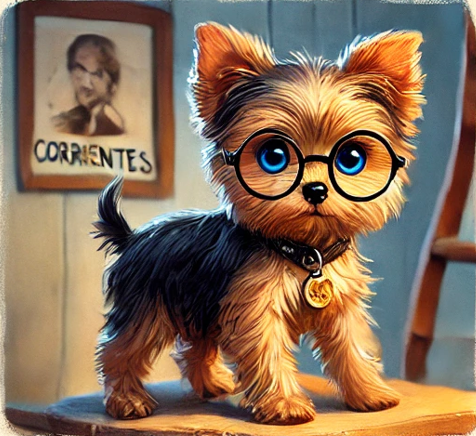

La vida de Sunny
En una cálida mañana de enero de 2023, en la ciudad argentina de Corrientes, llegó al mundo un diminuto Yorkshire Terrier que cambiaría para siempre la vida de su dueña, Ariana. Sunny, como fue nombrado por su peculiar personalidad brillante, nació siendo el más pequeño de su camada y con algunos desafíos de salud que lo hacían parecer más débil que sus hermanos. Desde sus primeros días, Sunny demostró que, aunque su cuerpo era frágil, su espíritu era indomable. Sus patitas, más delgadas de lo normal, no le impedían intentar escalar los muebles de la casa, aunque frecuentemente necesitaba la ayuda de Ariana para bajar de sus aventuradas expediciones.

A pesar de necesitar visitas frecuentes al veterinario y tomar medicamentos para fortalecer sus huesos, Sunny desarrolló una fascinación particular por las películas de espías que Ariana veía en las noches. Sus ojitos brillaban cada vez que escuchaba el tema musical de James Bond, y pronto comenzó a desarrollar sus propias "misiones secretas". Su debilidad física se convirtió en su mayor ventaja: nadie sospecharía de un pequeño Yorkshire Terrier que apenas pesaba un kilo y medio. Sunny aprovechaba su tamaño para escabullirse por los rincones más estrechos de la casa, creando escondites secretos donde guardaba sus "tesoros": calcetines desparejados de Ariana, lápices desaparecidos, y ocasionalmente, algún bocadillo robado de la cocina.
Sus travesuras se volvieron legendarias en el vecindario. Una vez, logró infiltrarse en la casa de al lado a través de un pequeño agujero en la cerca, solo para ser encontrado dormido en la cesta de ropa limpia del vecino, rodeado de evidencia de sus fechorías: varias galletas a medio comer y un moño rosa que había "tomado prestado". Ariana, lejos de molestarse, encontraba adorable la doble vida de su pequeño espía. Adaptó su hogar para crear "circuitos de entrenamiento" seguros donde Sunny pudiera ejercitar sus habilidades de agente secreto sin ponerse en riesgo. Instaló pequeñas rampas para que pudiera subir y bajar sin esforzar demasiado sus patitas, y escondía premios especiales en lugares estratégicos para que los "descubriera" durante sus misiones.
La determinación de Sunny inspiraba a todos los que lo conocían. Los veterinarios se maravillaban de cómo su espíritu aventurero parecía fortalecer su cuerpo día a día. Aunque seguía siendo más pequeño y delicado que otros perros de su raza, su valentía y astucia lo convertían en un agente secreto único en su tipo. Hoy en día, Sunny continúa sus operaciones encubiertas en las calles de Corrientes, siempre bajo la amorosa supervisión de Ariana. Su expediente secreto está lleno de hazañas memorables: desde rescatar juguetes perdidos hasta descubrir dónde esconde mamá las galletas. Puede que sea el agente más pequeño de la ciudad, pero sin duda es el que tiene el corazón más grande. Para aquellos que lo conocen, Sunny es la prueba viviente de que no importa cuán pequeño o débil parezcas: con determinación, amor y un poco de picardía, cualquier sueño es posible, incluso el de ser un agente secreto.